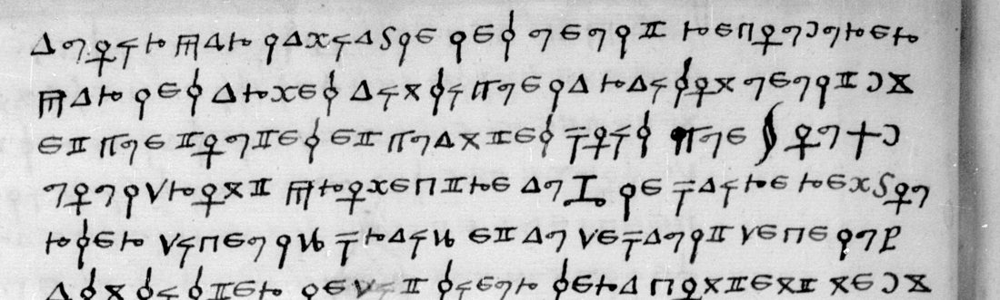
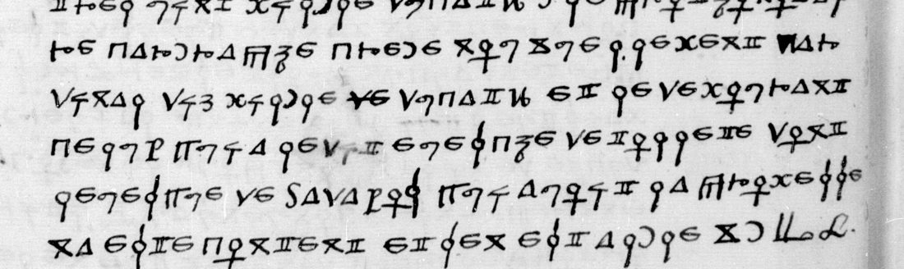
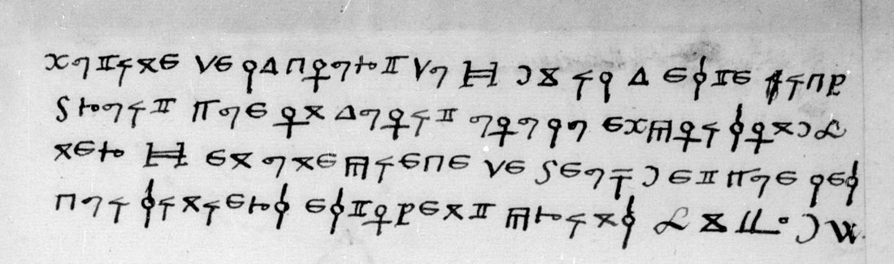

01 The letter and the key
Français 3029 is a volume of original letters, most of them from Louis de La Trémoille’s circle, with a run of cipher letters that DECODE records as R3666–R3687. The leaf f. 134r carries 26 lines of cipher, f. 135r four more, and f. 135v the clear address Au Roy / Mon souverain seigneur. The letter is not signed, and it begins in mid-sentence (“… avoir par l’amiable”), so a first leaf may be missing.

The key is Lasry’s table of 5 November 2023 (cryptiana, George Lasry’s decipherments, fr. 3029 f. 67), which is a plain substitution. Each letter A–Z has one sign (O has two), U and V share one, and so do I and J. Six signs are nulls, used mostly at word and line ends and between doubled letters (mil·le, ter·res). Four signs stand for persons (Nom 1–4) and one for a place (Place 1), all unidentified. Words are spaced. All five code signs occur in this letter.
02 The reading
Nulls dropped, words and accents modernised lightly; ‹N1›–‹N4› and ‹P1› are the unidentified name and place signs.
f. 134r
[…] avoir par l’amiable, les veult recouvrer par les armes ainsi que la raison veult; et que toutes et quantes fois que ‹N1› ou ‹P1› vouldront promectre au ‹N3› le faire rembourser d’iceulz fraiz, et au default de celuy assister, le dit sieur sera content me[ttre?] … tirer oultre contre les terres de l’Eglise. Et que par les obligations que ‹P1› et ‹N1› ont avec ‹N3› sont tenus a assister audit sieur a la guerre que fait de present pour recouvrer iceulz fraiz, d’autant que cela est taisiblement comprins a la ligue defensive.
L’ambassadeur de Venise m’a dit que le Cardinal l’avoit persuadé, afin que la Seigneurie ne fust contre ‹N4›.
Il m’a aussi esté dit de bon lieu que l’arcevesché de Tolete avoit esté donnée a l’evesque de Palance, et que le cardinal de Medicis avoit vingt mille ducatz de pension de L[·]lis, et le cardinal d’Iort autres vingt mille ducatz, le prothonotaire Carraphe, créé nouvellement cardinal, dix mille ducatz, et le demourant celuy qui a ledit evesché de Tollete; dont l’evesque de Badayos, qui avoit la promesse, n’a esté content et s’en est allé.

f. 135r
[…] mutiné de la court du ‹N2›. Il a esté icy bruit que on avoit voulu empoisonner ‹N2› en une piece de beuf, et que les cuisiniers estoyent prins.

Translation
[…] to have [it] amicably, he means to recover them by arms, as reason requires; and whenever ‹N1› or ‹P1› will promise ‹N3› to have him reimbursed for those costs, and failing that to assist him, the said lord will be content to … press on against the lands of the Church. And that by the obligations which ‹P1› and ‹N1› have with ‹N3› they are bound to assist the said lord in the war he is now making to recover those costs, since that is tacitly included in the defensive league.
The ambassador of Venice told me that the Cardinal had persuaded him of it, so that the Signoria should not be against ‹N4›.
I have also been told on good authority that the archbishopric of Toledo has been given to the bishop of Palencia, and that the cardinal de’ Medici had twenty thousand ducats of pension from L[·]lis, the cardinal “d’Iort” another twenty thousand ducats, the protonotary Carafa, newly created cardinal, ten thousand ducats, and the remainder goes to whoever holds the see of Toledo; at which the bishop of Badajoz, who had been promised it, was not content and has gone away.
[…] mutinied from the court of ‹N2›. There has been a rumour here that someone tried to poison ‹N2› in a piece of beef, and that the cooks had been arrested.
03 Method
An earlier pass over this volume (catalogue item 174, the folder fr3029/) had closed its cipher letters as “already broken by Lasry” without reading any of them, and it did not cover f. 134. Tomokiyo’s page named the leaf and gave the key image. The Gallica canvases of fr. 3029 carry no folio numbers, so the leaf was found with contact strips (view 182 = f. 118, 206 = f. 132, 210 = f. 134r). The thirty cipher lines were cut into bands from the full-resolution scans and transcribed by eye, each sign written as the letter Lasry’s table gives it (transcription.txt). The text read as French from the first word, with no value changed. The blotted sign and the three doubtful words were checked again on full-resolution crops. A language check on the 926 letter signs ranks sixteenth-century French first.
04 What remains
- The name signs ‹N1› (twice), ‹N2› (twice), ‹N3› (twice), ‹N4› and ‹P1› (twice): nine tokens, unidentified here as in Lasry’s table. ‹N3› is the lord waging a war to recover his costs against the lands of the Church; ‹N2› is a ruler with a court whom someone was said to have tried to poison. Only a reading of the sister letters (fr. 3029 ff. 67–202, fr. 3092 ff. 101–107) could fix them.
- “L·lis” (line 20), the source of the Medici pension: the letters are certain, the name is not identified (I).
- “d’Iort” (line 20): read as York, that is Wolsey, who drew Spanish pensions; not confirmed (M).
- “me.. tirer” (lines 6–7): me followed by two line-end nulls; perhaps mettre with letters lost at the line end (M).
- The blotted first sign of car|dinal (line 22) and the heavy first stroke of icy (f. 135r) are read from sense (C). The writer struck out dit (line 16) and de (line 23).
- The date. DECODE’s 11 January 1530 has no stated source. Toledo fell vacant when Guillaume de Croÿ died on 11 January 1521 and stayed vacant until 1523/24, and again after Fonseca’s death in February 1534. The bishop of Palencia in 1520–22 was Pedro Ruiz de la Mota, Charles V’s favourite. With a “cardinal de Medicis” and a war by the Church to recover lands, that points to 1521 and fits Tomokiyo’s tentative 1520–21 for this cipher. Against it, no cardinal Carafa was created in 1521 (Gian Vincenzo Carafa was made cardinal in 1527, Gian Pietro in 1536). Left open.
05 Sources
- BnF, Français 3029, ff. 134r–135v: Gallica btv1b90598719, views 210, 211, 213.
- DECODE record R3670 (“Non-decrypted”).
- George Lasry, key table for BnF fr. 3029 (5 Nov 2023), and Satoshi Tomokiyo’s notes on the cipher: cryptiana, “George Lasry’s decipherments”; also cryptiana francis.htm. Norbert Biermann broke the cipher independently (per Tomokiyo).
Transcription, sign stream, reading and notes: fr3029f134/ in the repository.